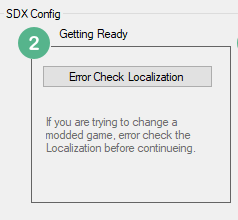
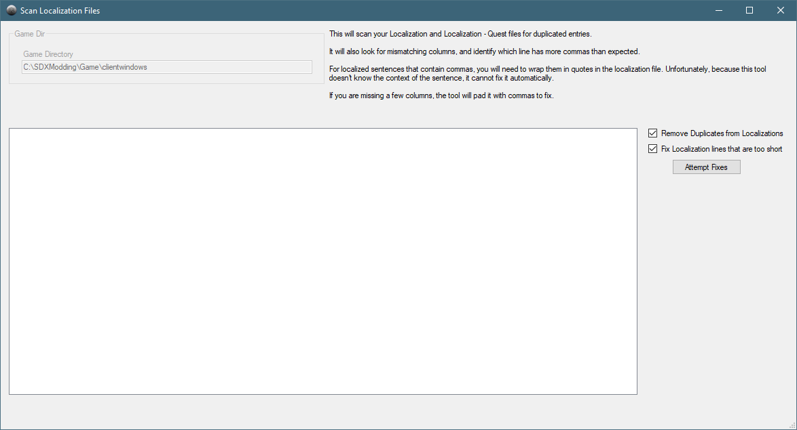
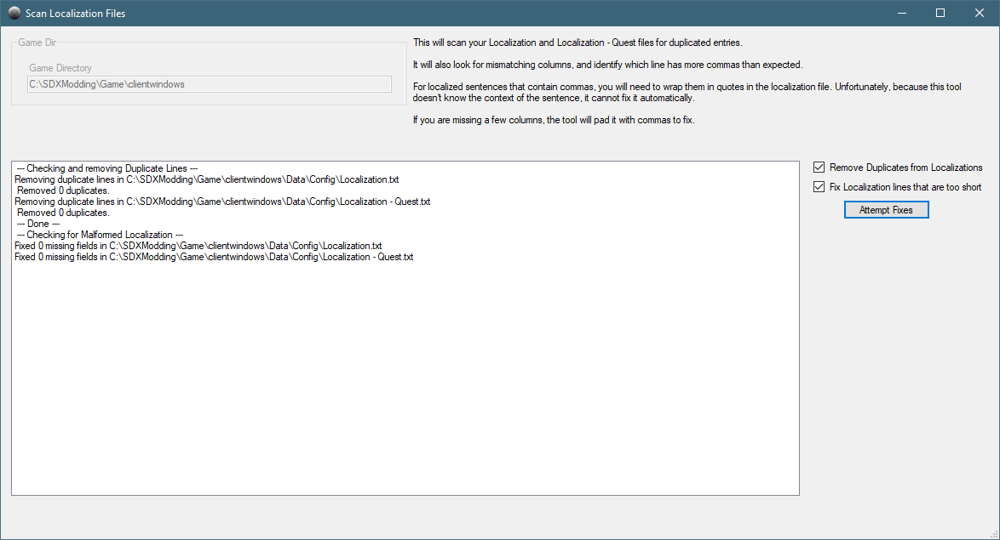

If you are using a vanilla version, as we are in this example, you typically won't have to worry about Error Checking Localization. However, as many mods have errors in their localization files, it's best to make it a habit of checking every time.

Click on the Error Check Localization file to open the Scan Localization Files screen.

Verify that the Game Directory is set correctly. If not, go back to the SDX Mod Helper main screen and change it there.
Click on the Attempt Fixes button.

It removed 0 duplicates, meaning, it did not find any. It also did not find any Malformed Localization entries, by indicating it did not have to fix any.
Created with the Personal Edition of HelpNDoc: Benefits of a Help Authoring Tool